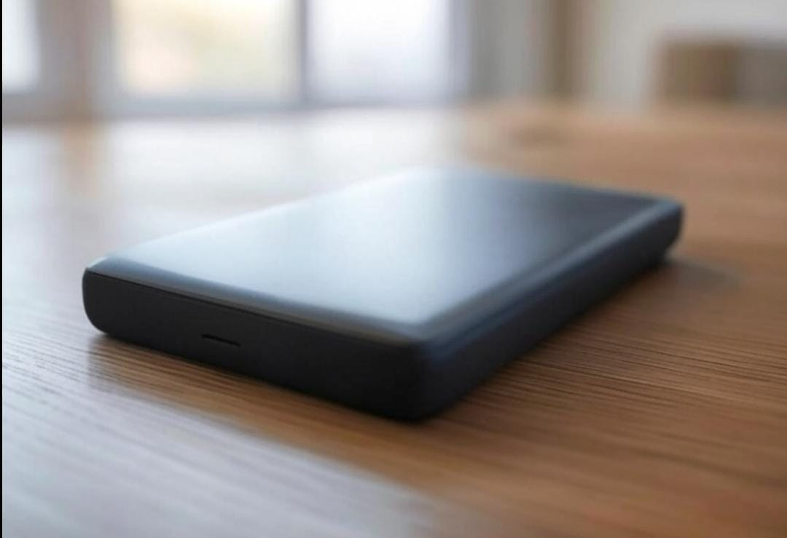

Top 10 Gadgets That Are Redefining Technology in 2025
From spatial computing to next-gen AI, 2025 is packed with revolutionary tech. Whether you're a tech enthusiast or just looking for your next upgrade, these top 10 gadgets are shaping the future in powerful and fascinating ways. Let’s dive into the most exciting releases of the year!
1. Apple Vision Pro
Apple Vision Pro is Apple’s first step into the world of spatial computing, blending augmented reality (AR) and virtual reality (VR) in a sleek, futuristic headset. Unlike traditional VR devices, it doesn’t require controllers—your eyes, hands, and voice are the tools. With ultra-clear micro-OLED displays boasting over 23 million pixels, it delivers stunning visuals that feel more real than ever. Whether you're watching movies, exploring 3D environments, or multitasking with floating apps, the experience is immersive and intuitive.
What sets Vision Pro apart is its new operating system, visionOS, designed from the ground up for mixed reality. It allows users to pin apps anywhere in their physical space, browse the web, collaborate on documents, and even connect wirelessly to a MacBook for a giant virtual display. Powered by Apple’s M2 and R1 chips, the device processes input from multiple cameras and sensors instantly, offering smooth interactions with virtually zero latency.
Crafted with precision using aluminum, glass, and breathable fabric, Vision Pro is built for both comfort and style. It also features advanced Spatial Audio, making sounds appear to come from your environment naturally. Although it's priced at a premium, the Apple Vision Pro isn’t just a headset—it’s a glimpse into the future of computing, where digital experiences feel seamlessly integrated into the real world.
2. Samsung Galaxy Z Fold 6
The Samsung Galaxy Z Fold 6 pushes the boundaries of what a smartphone can be, offering a seamless blend of phone and tablet in one elegant foldable device. With a sleeker design and reduced weight compared to its predecessor, it feels more premium and pocket-friendly. The outer display is a fully functional 6.3-inch AMOLED screen, while unfolding the device reveals a stunning 7.6-inch immersive display perfect for multitasking, gaming, and media consumption.
Underneath the stylish exterior, the Z Fold 6 is powered by the latest Snapdragon 8 Gen 3 processor, delivering top-tier performance and efficiency. Whether you're running intensive apps or juggling multiple windows, this foldable handles it with ease. Samsung has also introduced smarter multitasking tools—think drag-and-drop across apps, split-screen modes, and a taskbar that makes it feel like a mini laptop in your pocket. Plus, with improved hinge technology and a stronger body frame, it’s built to handle daily use with durability in mind.
The camera system is just as impressive, featuring a 50MP main sensor, ultra-wide and telephoto lenses, and AI-powered tools for capturing crisp, vibrant photos in any condition. New Galaxy AI features like real-time language translation, intelligent summarization, and creative photo editing push the Fold 6 beyond just hardware—it's a smart assistant and productivity powerhouse in one. With this release, Samsung isn’t just refining the foldable concept—they’re setting the gold standard for the future of mobile devices.
3. Tesla Optimus Bot
The Tesla Optimus Bot, also known as Tesla Bot, is Elon Musk’s bold vision of a humanoid robot designed to reshape the future of work. Standing at 5 feet 8 inches and weighing around 125 pounds, Optimus is built to move like a human, with articulated hands, legs, and a sleek, minimalistic frame. Tesla envisions it handling everyday tasks—like grocery pickup, assembly line work, or even household chores—freeing humans from repetitive or dangerous labor.
What makes Optimus stand out isn't just its design, but its brain. It uses the same neural networks and AI technology found in Tesla’s self-driving cars. That means it can “see” and understand the world around it, react to objects and people in real-time, and make decisions on the fly. Optimus is expected to carry up to 20kg, walk at 5 mph, and even understand basic voice commands, combining strength, agility, and intelligence in a single robotic form.
While it’s still in development, Tesla has already showcased working prototypes that walk, carry objects, and perform simple movements. The long-term goal? A future where Optimus bots assist in homes, factories, and even explore other planets alongside humans. Musk believes that Optimus could eventually become more significant than Tesla’s car business—a bold statement for a company that’s already revolutionized the electric vehicle industry.
4. Unitree A1 Robot Dog
The Unitree A1 Robot Dog is an advanced piece of robotics that blends engineering with the natural movements of a real dog. This four-legged companion can walk, run, jump, and even perform tricks with incredible agility, making it a marvel of modern technology. Designed for both indoor and outdoor environments, the A1’s ability to navigate various terrains, climb stairs, and avoid obstacles makes it more than just a novelty—it’s a highly functional robot. Whether it’s used for research, surveillance, or simply entertaining tech enthusiasts, the A1 delivers impressive performance.
Equipped with cutting-edge AI sensors and cameras, the A1 can analyze its surroundings, recognize objects, and interact intelligently with its environment. Its 4K camera allows it to stream high-definition video, perfect for remote monitoring or exploring areas that are difficult to reach. The A1’s versatility is further enhanced by its ability to be customized for specific tasks, such as surveillance, delivery, or as a tool for studying the behavior of autonomous robots. It’s a remarkable demonstration of how artificial intelligence and robotics can be combined to perform tasks once thought impossible for machines.
Despite its futuristic capabilities, the Unitree A1 Robot Dog is surprisingly affordable when compared to other robotic companions on the market. Its sleek, lightweight design ensures ease of movement and flexibility, making it suitable for various applications. Whether you're a robot enthusiast, a tech developer, or just someone looking for a cool gadget, the A1 provides a tangible glimpse into the future of robotics, offering both entertainment and practical functionality in one amazing package.
5. Meta Quest 3
The Meta Quest 3 is Meta’s most advanced mixed reality headset, bridging the gap between the real and virtual worlds like never before. With a slimmer, more comfortable design than its predecessor, it’s built for longer wear without sacrificing performance. The standout feature is its full-color passthrough, allowing users to see and interact with their physical environment while immersing themselves in digital experiences—a key step toward Meta's vision of the metaverse.
Powered by the new Qualcomm Snapdragon XR2 Gen 2 chip, the Quest 3 delivers a huge leap in graphics performance, smoother gameplay, and faster load times. It features dual 4K+ displays with improved resolution and contrast, making everything from games to virtual meetings look incredibly sharp. The redesigned controllers, equipped with improved haptics and no tracking rings, offer a more natural and precise interaction, while hand tracking has also been upgraded for more intuitive control.
Beyond gaming, the Meta Quest 3 is pushing boundaries in productivity, fitness, education, and social interaction. Whether you're attending a virtual conference, sculpting in 3D, working out with a virtual trainer, or exploring immersive learning environments, the Quest 3 makes it feel real. Meta is positioning it not just as a gaming device, but as an all-in-one mixed reality platform, shaping the way we live, learn, and connect in the digital age.
6. Amazon Echo Hub
The Amazon Echo Hub is Amazon’s smartest step yet toward creating the ultimate connected home experience. Unlike traditional Echo devices, the Echo Hub is designed specifically to act as a centralized smart home controller. With its sleek touchscreen interface and wall-mountable design, it looks more like a modern control panel than a speaker—and that’s exactly the point. It lets users manage lights, locks, thermostats, cameras, and more, all from a single, intuitive dashboard.
At the heart of the Echo Hub is Alexa, now more responsive and smarter than ever, capable of recognizing complex routines and adjusting your entire home environment with a single command. Want to activate “Movie Night” mode? One tap can dim the lights, close the blinds, and launch your favorite streaming service. It supports a wide range of smart home standards including Matter and Thread, making it highly compatible with thousands of devices across different brands.
Beyond just control, the Echo Hub brings useful widgets, visual alerts, and live camera feeds to your fingertips. It serves as an information hub too—offering reminders, calendar events, and even weather updates in real time. Whether it’s managing your home’s security or creating the perfect ambiance for dinner, the Echo Hub is designed to make smart living more seamless, centralized, and stylish than ever before.
7. DJI Avata 2
The DJI Avata 2 takes the thrill of first-person-view (FPV) drone flying to a whole new level. Built for both speed and stability, this compact and agile drone is perfect for immersive flight experiences, whether you're zipping through forests or soaring over urban landscapes. Its sleek, aerodynamic design improves flight performance while keeping the drone lightweight and portable—making it ideal for creators on the move.
What sets the Avata 2 apart is its upgraded camera system, capable of shooting incredibly smooth 4K video at high frame rates, with rich detail and vibrant colors. Thanks to advanced image stabilization and a wide-angle lens, every flight feels cinematic. Paired with the latest DJI Goggles and Motion Controller, pilots can enjoy an intuitive, adrenaline-pumping flying experience—just tilt your hand or turn your head, and the drone responds instantly.
Whether you're a beginner or a seasoned drone racer, the Avata 2 offers a mix of safety and performance. Features like obstacle sensing, return-to-home, and low-latency transmission ensure you stay in control, even at high speeds. With longer flight time, improved connectivity, and powerful editing options in the DJI Fly app, the Avata 2 is more than just a drone—it’s a flying camera built to unleash your creativity in midair.
8. Steam Deck OLED
The Steam Deck OLED is Valve’s upgraded take on its already beloved handheld gaming PC, combining raw performance with visual brilliance. The standout feature? A gorgeous 7.4-inch OLED display that delivers deeper blacks, more vibrant colors, and smoother motion—all while being brighter and more power-efficient than the original LCD model. Whether you're diving into AAA titles or retro classics, the OLED screen transforms portable gaming into a much more immersive experience.
But the improvements go beyond just looks. The Steam Deck OLED packs a bigger battery, improved cooling, and a lighter frame, meaning longer, more comfortable play sessions without overheating. It also supports Wi-Fi 6E, allowing for faster downloads and better cloud gaming performance. Combined with Valve's ever-improving Proton compatibility layer, players can now access even more Windows titles on the go with minimal hassle.
What makes the Steam Deck OLED truly special is that it’s not just a console—it’s a full Linux-based PC in your hands. Want to mod your games, install emulators, or even connect it to a monitor and use it like a desktop? You can. It gives gamers an open platform with the power of a PC and the freedom of a handheld, now with a screen that finally does justice to the games it runs.
9. Sony WH-1000XM5 Headphones
The Sony WH-1000XM5 headphones redefine what premium audio feels like, combining world-class sound quality with next-level noise cancellation. With a completely redesigned chassis, these headphones offer a sleeker, more modern look and a lighter, more comfortable fit for long listening sessions. Whether you're on a plane, in a busy office, or just enjoying your favorite playlist, the WH-1000XM5 wraps you in a quiet, immersive sound bubble.
At the heart of the experience is Sony’s Dual Processor system and eight microphones, working together to deliver the most adaptive noise-canceling tech the brand has ever released. The audio is rich, detailed, and dynamic, thanks to specially designed 30mm drivers that produce crisp highs, deep lows, and a balanced midrange. Add to that support for Hi-Res Audio, LDAC, and 360 Reality Audio, and you get studio-level sound on the go.
Beyond just sound, these headphones are smart. They pause automatically when you take them off, adjust noise cancellation based on your surroundings, and even respond to your voice with Speak-to-Chat. With up to 30 hours of battery life, super-fast charging, and intuitive touch controls, the WH-1000XM5 is more than just a listening device—it's a daily essential for audiophiles, travelers, and anyone who craves quiet in a noisy world.
10. Anker Prime Power Bank 250W
The Anker Prime Power Bank 250W is not just a power bank—it’s a portable charging powerhouse built for modern tech enthusiasts. Designed with a sleek, high-capacity body and a digital display, it packs a whopping 27,000mAh battery capable of charging everything from smartphones to laptops and even power-hungry gaming consoles. With a total output of 250 watts, it delivers fast, simultaneous charging for multiple devices without breaking a sweat.
Equipped with dual USB-C ports and one USB-A port, the Anker Prime can juice up a MacBook, iPhone, and tablet all at once—making it the ideal companion for digital nomads, content creators, or just busy people who can’t afford to run out of battery. Its smart display gives you real-time info on power flow, temperature, and remaining charge, keeping you in control and avoiding surprises.
What sets this power bank apart is its blend of power and portability. Despite its beastly performance, it's compact enough to fit in a backpack and airline-approved for carry-on, making it perfect for travel. Add Anker’s legendary durability and advanced safety features, and you've got a reliable charging station in your pocket—ready to keep all your gear alive, anytime, anywhere.